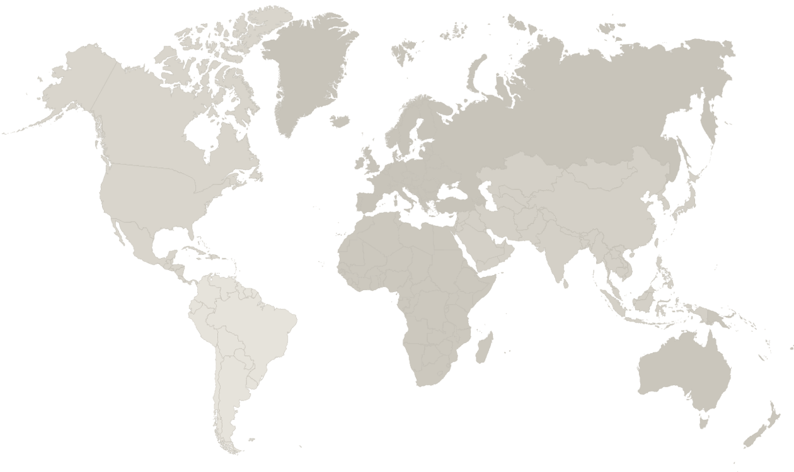

I joined the team three months ago and I'm passionate about people, travel and discovering new cultures.
Exploring the world through local scenery, new experiences, horseback riding — and food.

One of the destinations I've explored while discovering new places, cultures and experiences.
A leap of faith that opened a new chapter in my personal and professional life.
Filipino roots, family in Australia, Colombian love, and a new life in Korea.
Different experiences, one mindset: learn, adapt and connect.
An open mind and a strong willingness to learn something new.
People skills, hospitality experience and a genuine love of working with others.
Strong work ethic, adaptability and the ability to stay calm when things get busy.
If I have to choose between being the best
and being kind, I will always choose kindness.
A supportive and kind team can achieve anything.
Thank you for welcoming me.
I'm excited to learn, work, mix and mingle with everyone.